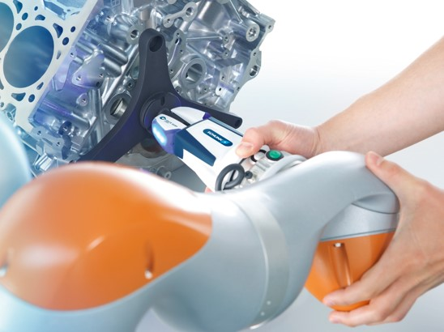

RoX
4. Konsortialtreffen
18. und 19.05.2026
Deutsches Zentrum für Luft- und Raumfahrt e. V. (DLR), Ulm
RoX · Enabling AI Robotics
01
Digital
Ecosystem
for AI-based
Robotics.
02 · Section
02
TP 04 · Wahrnehmung
Zusammenfassung
Wichtige aktuelle Themen
- Multi-Sensor-Kalibrierung abgeschlossen (DLR + UStuttgart)
- Domain-Adaptation-Benchmark v0.3 veröffentlicht
- Workshop „Sim2Real" am 12.06.2026 in Karlsruhe
Abhängigkeiten zu anderen Arbeitspaketen
- TP 02 · Datenplattform — API-Vertrag bis 30.06.
- TP 05 · Steuerung — gemeinsame Eval-Suite
TP-Verzögerung (in Monaten)
>3M
3M
2M
1M
0M
voraus
TP-Gesamtstatus
Auf Kurs · leichte Verzögerung im Daten-AP
© RoX Konsortium · 2026
03
Arbeitspakete
Fünf Säulen des Ökosystems
01
Datenplattform
Skalierbare Aufnahme und Versionierung synchroner Multi-Sensor-Daten.
02
Wahrnehmung
Robuste Perzeption über Domänengrenzen hinweg, mit Sim-to-Real-Brücke.
03
Steuerung
Lernende Regelung mit Sicherheitsgarantien für Industriearmen.
04
Integration
Schnittstellen, Referenzanwendungen, Testzellen bei DLR und Partnern.
05
Transfer
Standardisierung, Schulungen, Open-Source-Releases der Komponenten.
© RoX Konsortium · 2026
04
Mission
A digital ecosystem where AI-based robots learn, adapt and cooperate across the entire industrial value chain.
RoX Konsortium · Projektvision
© RoX Konsortium · 2026
05

Use-Case · Inline-Qualität
Optische 3D-Inspektion direkt am Robotergreifer
Der Roboterarm trägt ein hochpräzises Scansystem zur Inline-Qualitätsprüfung
von Motorgehäusen. Die im TP 02 entwickelte Datenpipeline streamt Punktwolken
in Echtzeit an die Lernschicht aus TP 04.
Demonstrator läuft seit M18 bei einem Pilotpartner
© RoX Konsortium · 2026
06
KPI · Trainingsdaten pro Quartal
Datenvolumen wächst auf 110 TB
120100806040200
Q1 ‘25
Q2 ‘25
Q3 ‘25
Q4 ‘25
Q1 ‘26
Q2 ‘26
© RoX Konsortium · 2026
07
Impressum
Angaben & Bildrechte
Thema:
RoX — 4. Konsortialtreffen · Vorlagensatz
Datum:
2026-05-18 (JJJJ-MM-TT)
Autor:
Anna Alexandra Sorokina, im Auftrag des RoX-Konsortiums
Bildquellen:
Alle Bilder „(CC BY-NC-ND 3.0)", sofern nicht anders angegeben


RoX · Enabling AI Robotics
08